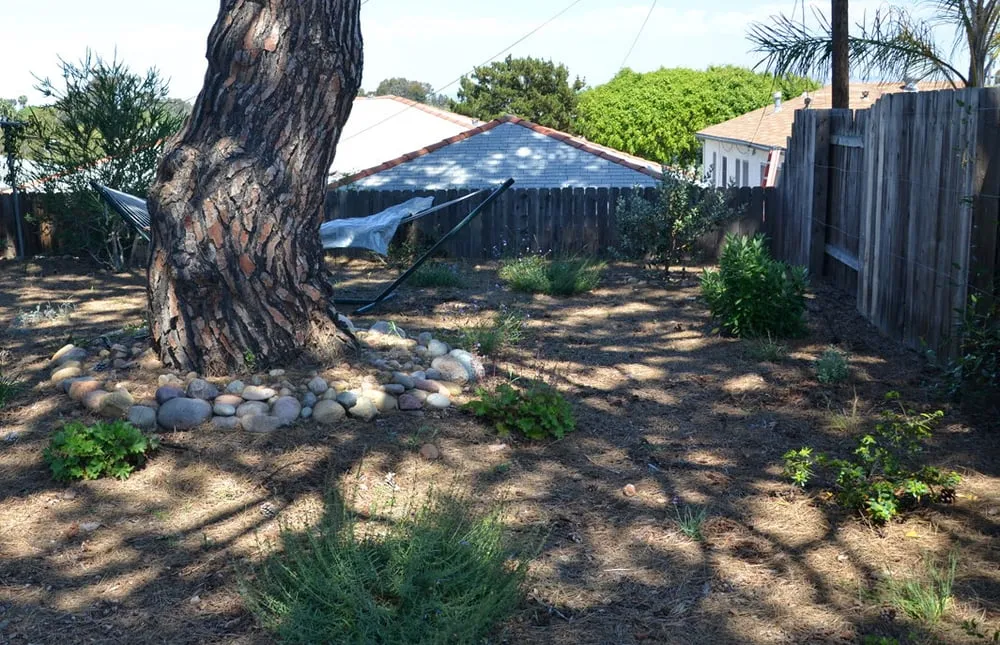
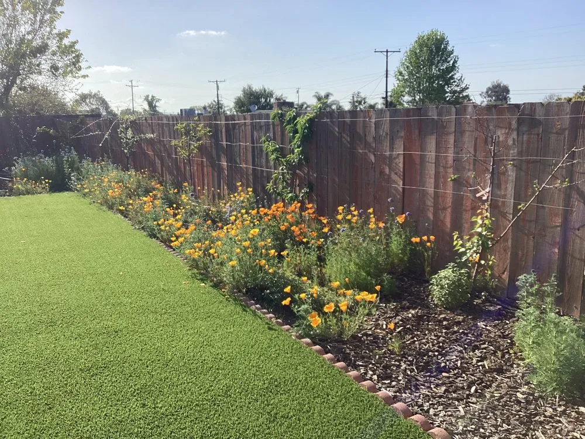
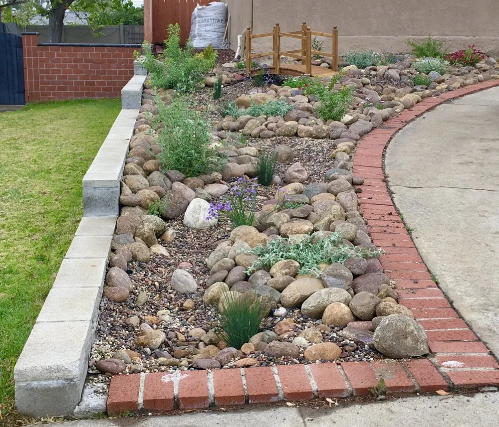
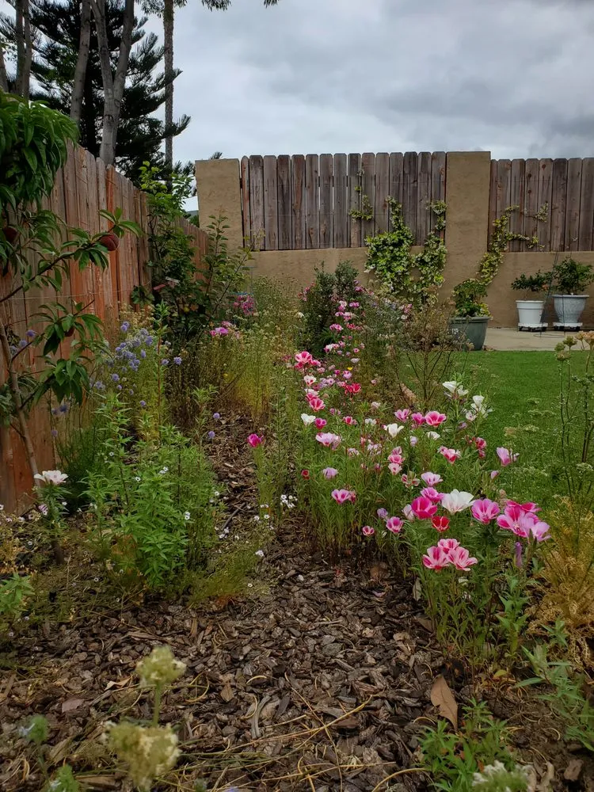

Gardens built for this land, this water, this future
Native and drought-tolerant landscape design, turf removal, and pollinator gardens, a boutique studio rooted in California native plants and permaculture practice.
28 Yelp reviews · San Diego native & low-water specialists

Real client project · San DiegoDesign that works with San Diego’s climate, not against it
Gardens for the Future specializes in native and drought-tolerant landscape design, turf removal, and pollinator gardens. The approach is boutique and eco-conscious, a permaculture-minded designer’s brand, earthy and expert, built around sustainability rather than the scale of a large commercial landscaping outfit.
Every project centers California native and low-water plantings, from full landscape overhauls to edible garden beds, with an emphasis on long-term stewardship over one-time installs.
Gardens taking root around San Diego
A few glimpses of native beds, pollinator borders, and low-water plantings from real client landscapes.



Services rooted in sustainable design
From first consultation to ongoing care, every service is built around water-wise, native-forward landscaping.
Landscape Design Consultation
Start with a thoughtful, on-site consultation to map out a plan suited to your space, sun, and soil.
California Native & Low-Water Design
Climate-appropriate planting plans built around native species and minimal irrigation needs.
Edible & Food Garden Design
Productive, beautiful food-growing spaces designed to fit into a native landscape plan.
Landscape Installation
Full implementation of your design, plantings, hardscape touches, and turf removal handled start to finish.
Ongoing Garden Maintenance
Seasonal care and upkeep to keep native and edible gardens thriving year-round.
Fruit Tree Pruning
Expert pruning to keep fruit trees healthy, productive, and well-shaped.
Irrigation Repair & Adjustment
Fine-tuning and repair of irrigation systems to support efficient, low-water landscapes.
San Diego
Locally Based
28
Yelp Reviews
Native
& Low-Water Focus
Boutique
Permaculture-Minded Studio
Frequently asked questions
A few honest answers about how native and low-water landscape design typically works.
Not necessarily. Many projects start small, converting a section of turf, adding a pollinator border, or replacing a few water-hungry beds, and expand over time. A consultation can help identify which areas make the most sense to start with based on your space and goals.
Native plants are species that occur naturally in the region, which generally makes them well-adapted to local rainfall, soil, and wildlife. Drought-tolerant plants can include natives and non-natives selected for their low water needs. A design can blend both approaches depending on the look and function you want.
Yes, that combination is a core part of this studio’s approach. Many California native plants are important food and habitat sources for pollinators, and edible garden beds can be designed to fit alongside low-water plantings rather than requiring a separate high-water zone.
It depends on your property, water provider, and the scope of the project. Some turf replacement programs in the San Diego area offer rebates with specific requirements. It’s worth asking during a consultation whether your project may qualify and what documentation would be needed.
The best next step is to reach out directly to discuss your space, goals, and timeline. From there, an on-site visit can help determine scope and next steps for design or installation.
Plan Your Visit
- Service AreaSan Diego, CA
- CategoryLandscape Design / Gardening (native & low-water)
- HoursContact for current availability and scheduling
Gardens for the Future is a registered San Diego sole-proprietorship with a credible Yelp listing and multiple local directory listings. Reach out directly to confirm current hours and availability.
Serving San Diego, CA, view the exact location and get turn-by-turn directions on Google Maps.
Open in Google Maps